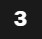

Top places 3 to eat in Greenwich
Restaurants, American
Buffalo Greenwich American Grill & Tex-Mex
Price: Mid-range
When to go: This restaurant is always quite busy, try to go at least before 8PM, specially between Thursday to Sunday.
What to have: Anything that fancies your pick (such as the rack of honey bbq ribs) or some sizzle (such as the chicken florida fajitas).
Restaurants, French
Champagne & Fromage
Price: High-range
When to go: This restaurant is always quite busy, try to go at least before 8PM, specially between Thursday to Sunday.
What to have: Anything that fancies your pick (such as the rack of honey bbq ribs) or some sizzle (such as the chicken florida fajitas).
Restaurants, English
Greenwich Tavern
Price: mid-range
When to go: This restaurant is quite big with a large amount of seating both indoor and outdoor, as always weekend evenings are busy.
What to have: Anything that fancies your pick (such as the rack of honey bbq ribs) or some sizzle (such as the chicken florida fajitas).
Top places 3 to drink in Greenwich
The Admiral Hardy
Price: ££-£££
When to go: Quiz night every Wednesday followed by a regular live DJ set on Saturday nights
What to have: Regular bar with a large choice of spirits and draft lager
Cooperage Greenwich
Price: ££
When to go: Happy Hour is between 5-9PM everyday! The place does get busy, Friday nights during happy hour till close, be there or be square!
What to have: The large range of cocktails will not disappoint.
Trafalgar Tavern
Price: ££-£££
When to go: The place does get quite busy during the evening
What to have: Likewise with The Admiral Hardy, this place serves a large choice of spirits and draft lagers.